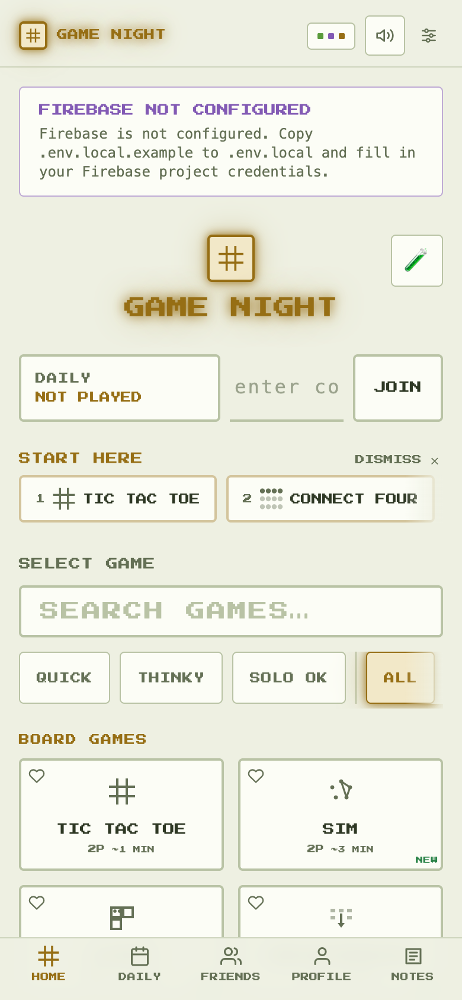
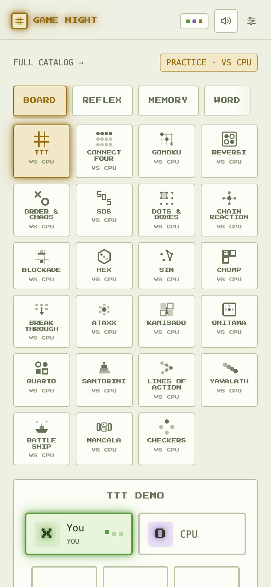
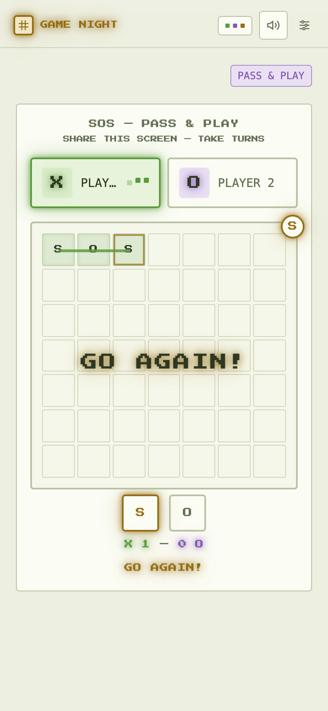
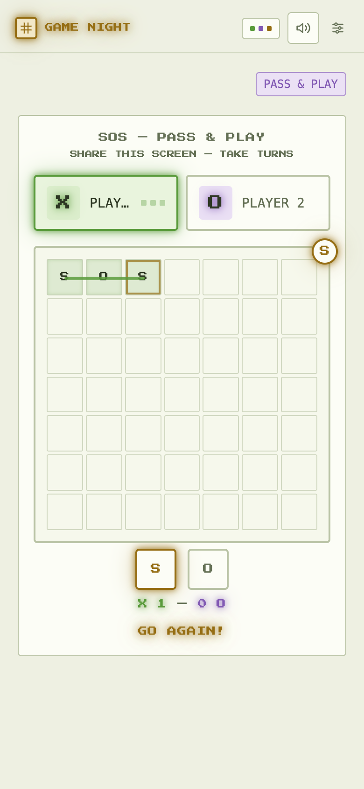
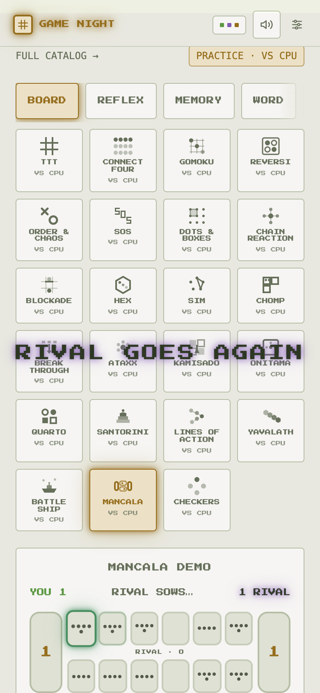
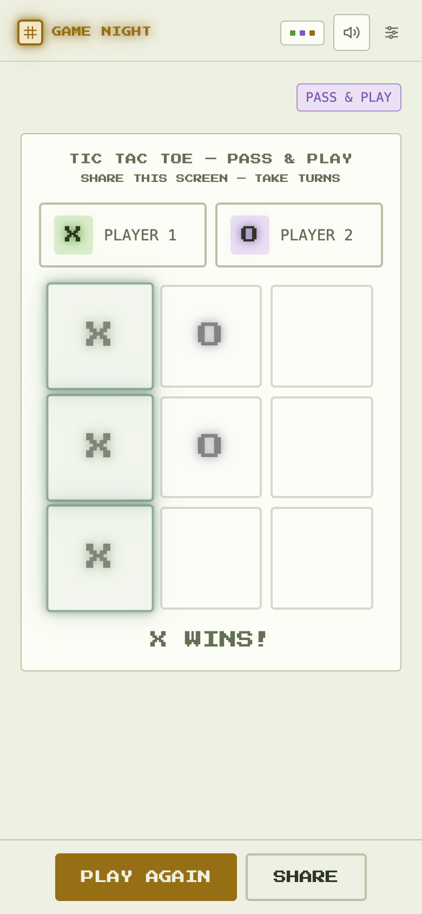
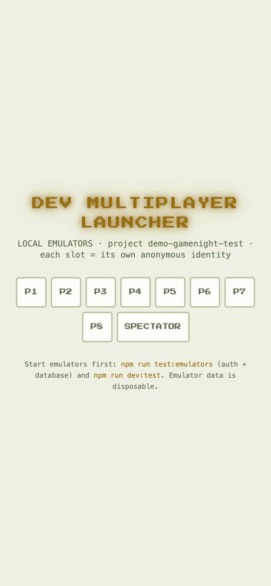
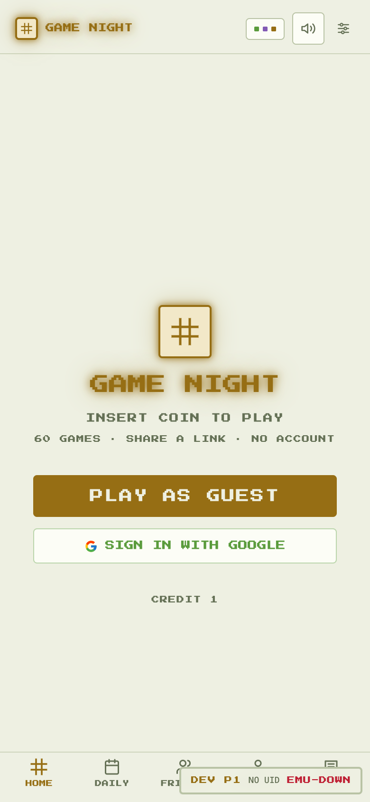

Real screenshots of today's changes, taken from the worktree running on a phone-sized browser
(390×844). The start screen, practice hub, start-here strip, the new full-screen "GO AGAIN!"
flash, the share button on end screens, and the dev multiplayer launcher.
Before anyone clicks anything, the screen says what this is:
60 GAMES · SHARE A LINK · NO ACCOUNT. The game count is read from the game list,
so it stays correct automatically.F-45 · START HERE RAIL

Brand-new visitors see a "START HERE" strip above the game picker:
4 picked games in order (Tic-Tac-Toe → Connect Four → Battleship → Sketch). It quietly
goes away once the visitor plays something or closes it.
PRACTICE HUB
F-40 + F-41 · HUB RELABEL

The hub now says PRACTICE · VS CPU and links back to the full catalog
(top left). Every tile is honest about what tapping does: VS CPU. CHECKERS and SANTORINI no
longer break mid-word, and the 7 game variants no longer double-count — the hub now matches
the home page's numbers.
THE BIG-MOMENT FLASH
F-44 · EXTRA TURN FLASH

Completing an S-O-S used to be one small line of text. Now the whole
screen flashes with a big "GO AGAIN!" — the game's best moment finally looks like it.
A new two-note sound plays with it.F-44 · STATE STAYS

After the flash fades, the small persistent "GO AGAIN!" text stays on
screen, so the extra turn remains readable. The flash is the celebration; the text is the
state.F-44 · MANCALA

Same treatment in Mancala: the rival lands seeds in its own store and
the full-screen flash fires. Battleship got the matching one for hits
("HIT! GO AGAIN" / "SUNK! GO AGAIN").
SHARE ON THE END SCREEN
F-46 · END SCREEN

Six game pages could not share a result before. Now every end screen
follows the same checklist: PLAY AGAIN · SHARE · TRY NEXT · SWITCH GAME. The share button
draws a themed result card and opens the phone's share sheet.
DEV MULTIPLAYER TESTING (F-51)
F-51 · LAUNCHER

Run npm run test:emulators + npm run dev:test
and the browser becomes this launcher. Each button opens a normal tab that acts as that
player — two people on one computer for testing, no incognito windows needed.F-51 · PLAYER BADGE

A slot tab shows a small badge: the slot (P1), the player id, and
whether the fake Firebase servers are up (EMU-OK / EMU-DOWN — down here because the capture
ran without them). It never appears on the live site.
NOT PICTURED (LIVE ONLY)
F-42 · WAITING ROOM LINES
Needs a real two-player room: the waiting room shows a blinking line like
"RIVAL IS DEPLOYING THEIR SECRET FLEET…" for Battleship, Hangwoman, Password, Wavelength,
Spyfair, and Sketch while the other seat is empty.
F-44 · BATTLESHIP HITS
Same flash family as above — "HIT! GO AGAIN" and "SUNK! GO AGAIN" over the targeting grid,
with the new ping sound. Needs two players to capture.
F-51 · REAL 2-PLAYER FLOW
Two slots claiming X and O in one room needs the local emulators running
(npm run test:emulators). The badge shows EMU-DOWN here for that reason.
Walkthrough: docs/DEV-MULTIPLAYER.md.
Screenshots captured Sep 22, 2026 with a headless browser against the worktree dev server
(Firebase blocked → local guest mode; the config warning and toast are hidden so the features
stand out). Captured by capture.mjs in this folder — re-run it any time with
node .lavish/quick-wins-ux/capture.mjs while the dev server is on port 5174.
Full change report →